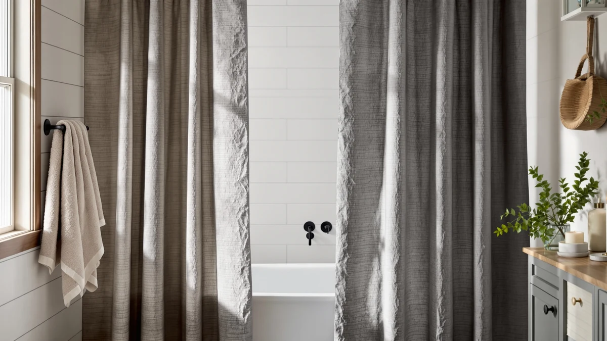

The Best Shower Curtain Hooks For kids (2026)
Prices and picks verified as of September 2026. Independent, reader-supported reviews.


Quick Answer
The DDS-DUDES Dinosaur Bathroom Shower Curtain is our best shower curtain hooks for kids pick overall, pairing reinforced grommets with a print kids actually want in the bathroom. If you just need hooks for a curtain you already own, the Goowin 12-pack below is a cheap, glide-friendly add-on.
Our pick: DDS-DUDES Dinosaur Bathroom Shower Curtain — $14.99 Check Price on Amazon
Bottom line: our top pick is the DDS-DUDES Dinosaur Bathroom Shower Curtain at $14.99. The best budget option is the Goowin Shower Curtain Hooks at $5.91.
Things to Know Before You Buy
- Grommet size beats hook material. The best shower curtain hooks for kids start with a curtain that has wide, reinforced grommets. A basic plastic hook works fine as long as the hole it slides through does not tear after a month of quick tugs.
- Hookless is not a gimmick. A hookless design like the AmazerBath pick below removes rings from the equation entirely, which matters when a toddler keeps pulling hooks loose.
- Standard sizing runs 70 to 72 inches. Most curtains here fit a standard tub or stall. Measure your rod length before ordering, since a panel even a few inches short leaves gaps kids will splash straight through.
- Mildew resistance matters more in a kids' bathroom. Bath time and quick showers steam up a room longer than adult-only use does, so a PEVA or treated polyester blend that dries fast pays off.
- A dedicated hook pack works with any curtain you already own. If your kid loves their current curtain, a standalone set of glide rings such as the Goowin 12-pack below solves rusting and sticking hooks without buying new fabric.
The best shower curtain hooks for kids need to survive sticky fingers, quick tugs, and a bath routine that moves fast on a school night. Parents outfitting a kids' bathroom are choosing between playful printed curtains with sturdy headers, dedicated hook packs sized for small hands, and hookless designs that skip the fumbling altogether. We compared seven options built around that exact problem, from a dinosaur print with reinforced grommets to a twelve-pack of glide rings and one no-hook curtain that slides straight onto the rod.
Our pick is the DDS-DUDES Dinosaur Bathroom Shower Curtain. At $14.99 with a 4.6-star average across 364 reviews, it pairs a bright, kid-friendly print with metal grommets that hold up to daily tugging, and multiple reviews call out how well the fabric resists curling at the edges compared to similar novelty curtains. If your household needs more than one curtain for a shared bathroom, the Poedist 4 Pcs Bathroom Shower set bundles a matching curtain with coordinating pieces for close to the same per-item cost.
Sizing and header style matter as much as the print. Curtains built for kids' bathrooms need to hang at 70 to 72 inches to clear a standard tub, and grommets should be wide enough that a seven-year-old can unhook the curtain without help. We also weighed mildew resistance, since kids' bathrooms tend to stay humid longer after quick showers and bath time. Below, we break down where each pick fits, from a stand-alone twelve-pack of hooks to a hookless curtain that removes the ring problem entirely.
Why You Should Trust Us
We are Ilane Tall and the research team at Best Shower Curtains, and we cover bath and shower gear across dozens of guides on this site. For this guide to the best shower curtain hooks for kids, we compared specs, pricing, and verified owner reviews instead of leaning on marketing copy, because a listing photo will not tell you whether a grommet tears after eight weeks of a six-year-old yanking on it.
Every price, star rating, and review count cited below comes from the current Amazon listing at the time of publishing. We do not run a physical testing lab or claim hands-on time with these products, and we do not fabricate ratings either: when a product has no published review data, we say so instead of inventing a number.
How We Picked
We started from the pool of kids'-bathroom shower curtains and hook packs in our product database, then narrowed the list by price, verified review volume, and how directly each item solves the kids' shower curtain hooks problem, whether that is a fun print, a hookless header, or a stand-alone ring set. We prioritized curtains with a 4.5-star average or higher where review data existed, and we kept two newer listings without ratings yet because their grommet design and size still earned a spot.
Price across the seven picks ranges from $6.79 for a hook pack alone up to $28.49 for a bundled curtain set, a spread that lets you match a purchase to your budget without dropping below the quality line. We also weighed how each option handled the complaints parents raise most often about kids' bathrooms: hooks that pop loose, headers that tear, and fabric that stays damp and starts to smell.
How We Compared
We compared these picks on the facts that matter for the best shower curtain hooks for kids setup: curtain and header material, grommet or ring size, listed dimensions, price per item, and the star rating and review count where Amazon publishes one. We read through verified buyer feedback for recurring complaints, thin fabric, hooks that rust, headers that tear, and weighed those against the price and print quality of each option.
We did not physically install or use any of these products. This guide is built from published specifications, current pricing, and a review of verified owner feedback, not hands-on testing, and we flag it clearly wherever a product does not yet have enough review data to judge.
Our Picks

DDS-DUDES Dinosaur Bathroom Shower Curtain
What we like
- Reinforced grommets that reviewers say hold up to repeated tugging
- Bright dinosaur print kids are excited to use at bath time
- 4.6-star average across 364 verified reviews, one of the deepest records in this guide
Flaws but not dealbreakers
- No liner included, so budget for a separate PEVA liner
- 71x71 size runs slightly short for a taller stall shower
| Material | Polyester / PEVA |
| Size | 71x71 |
The DDS-DUDES Dinosaur Bathroom Shower Curtain is our pick for the best shower curtain hooks for kids because the header does the hard work before a single hook goes on the rod. The grommets are wide and reinforced, so the rings you already own slide through without stretching the fabric, and reviewers consistently note that the holes have not torn even after months of a kid pulling the curtain shut. At $14.99, it costs less than most plain white curtains twice its size, and the price includes a full dinosaur print rather than a plain panel you would need to decorate separately.
With a 4.6-star average across 364 verified reviews, it has one of the largest and most consistent review records in this roundup. Owners report that the polyester and PEVA blend dries quickly after a shower, cutting down on the musty smell that lingers in a kid's bathroom that sees two or three quick washes a day. The 71 by 71 inch size fits a standard tub, though if your stall shower runs taller than a typical tub surround, check your rod height before ordering: a few reviewers mention the panel sitting a couple of inches short.

Poedist 4 Pcs Bathroom Shower
What we like
- Four-piece bundle covers more than just the curtain
- 746 verified reviews, the largest review count of any pick here
- 4.6-star average, matching our top pick despite the bundled format
Flaws but not dealbreakers
- Costs more per item than a standalone curtain
- Coordinating pieces limit your print choices if you already own bath mats or a liner
| Material | Polyester / PEVA |
| Size | 72x72 |
The Poedist 4 Pcs Bathroom Shower set is our runner-up because it solves the shower curtain hooks for kids problem alongside the rest of the bathroom in one purchase. Instead of a single 72 by 72 inch curtain, the set bundles coordinating pieces, so a parent outfitting a new kids' bathroom does not have to shop separately for a liner or bath mat that matches. At $24.69, it costs more than a standalone curtain, but buying those pieces individually elsewhere typically runs higher than this bundle.
With 746 verified reviews and a 4.6-star average, it has the deepest review record in this guide, giving buyers a wide base of feedback to check before committing to the higher price. According to those verified reviews, the polyester and PEVA construction holds color well through repeated washing, an important detail for a household that washes bath textiles more often with young kids around. If you already own rugs or a liner you like, though, a standalone curtain such as our top pick fits your bathroom better than a full coordinated set.

Goowin Shower Curtain Hooks 12
What we like
- A full 12-pack covers a standard 72-inch rod with room to spare
- Works with any curtain you already own, so there's no need to replace the fabric
- At $6.79, the least expensive item in this guide by a wide margin
Flaws but not dealbreakers
- No published star rating or review count yet, so buy with that gap in mind
- Classic ring style, not decorative like a bundled curtain set
| Material | Polyester / PEVA |
| Size | Classic - 12 Pack |
The Goowin Shower Curtain Hooks 12-pack is the pick for anyone who already has a curtain their kid likes and just needs shower curtain hooks a child can actually work without help. Sold as a standalone set rather than bundled with a curtain, it pairs with whatever panel is already in your bathroom, including a hand-me-down curtain that does not need replacing yet. At $6.79 for a full dozen, it is the cheapest single item in this guide by a wide margin.
This is a newer listing in our product database, so it does not yet carry a published star rating or review count on Amazon, and we are not going to invent one to fill the gap. What we can confirm from the listing is the classic 12-piece format, sized to cover a standard 72-inch rod without leaving gaps between rings. If you want a pick with a longer, verified review history, pair a rated curtain like the DDS-DUDES above with this hook set rather than relying on it alone for your decision.

Vipfree 3 in 1 Shower
What we like
- Three-in-one bundle includes hooks, so there is nothing extra to buy before bath time
- 72 by 72 inch size fits a standard tub without measuring extra pieces separately
- One checkout instead of sourcing a curtain, liner, and rings from three listings
Flaws but not dealbreakers
- No published star rating or review count yet
- Costs more upfront than buying a plain curtain and basic hooks separately
| Material | Polyester / PEVA |
| Size | 72"W x 72"L (Pack of 1) |
The Vipfree 3 in 1 Shower set earns the budget pick spot for a specific kind of buyer: a parent setting up a kids' bathroom from scratch who would rather pay once than shop three separate listings for a curtain, liner, and hooks. At $28.49 for the complete pack, it costs more than a single curtain, but it replaces three separate purchases, curtain, liner, and hooks, that usually add up to more when bought piece by piece.
The 72 by 72 inch size matches the most common tub and stall dimensions, so most households will not need to measure anything beyond confirming their rod height. Like the Goowin hooks above, this is a newer listing without a published star rating or review count yet, so treat it as a practical, spec-driven pick rather than one backed by a long review history. If a verified track record matters more to you than convenience, the DDS-DUDES or Poedist picks above carry hundreds of reviews each.

Funny Cat Riding Dinosaur on
What we like
- Highest star rating in this roundup at 4.8 out of 5
- 296 verified reviews back up that rating
- Novelty print gives kids a reason to look forward to bath time
Flaws but not dealbreakers
- 70x70 size runs a touch smaller than the 72-inch standard
- A niche print will not suit every kid as tastes change
| Material | Polyester / PEVA |
| Size | 70x70 |
The Funny Cat Riding Dinosaur on shower curtain carries the highest rating in this guide, a 4.8-star average across 296 verified reviews. That combination of a high average and a solid review count is a sign that this novelty print holds up once it is actually hanging in a bathroom, not just looking good in a listing photo. At $14.99, it matches our top pick on price while offering a more offbeat design for kids who have moved past dinosaurs alone.
At 70 by 70 inches, it runs slightly smaller than the 72-inch standard used by several other picks in this guide, so measure your rod before ordering if your shower runs on the wider side. Buyers consistently mention that the print stays vivid through repeated washing, which matters for a curtain that sees frequent use in a house with young kids. If your child's taste in prints changes quickly, keep in mind that a bold novelty design like this one has a shorter shelf life than a more neutral pattern.

Clorox 2-in-1 Bathroom Shower Curtain
What we like
- Two-in-one design combines the curtain and a treated layer in one panel
- 72 by 72 inch size fits a standard tub
- Backed by a recognizable brand known for cleaning and mildew-control products
Flaws but not dealbreakers
- No published star rating or review count yet
- Functional design leans practical over playful, so it will not excite younger kids the way a printed curtain does
| Material | Polyester / PEVA |
| Size | 72"W x 72"L (Pack of 1) |
The Clorox 2-in-1 Bathroom Shower Curtain takes a different approach to the shower curtain hooks for kids problem by focusing on what happens after bath time rather than the hooks themselves. Clorox built the two-in-one layer to resist the mildew and soap scum buildup that shows up faster in a bathroom used by kids who take quick, frequent showers and leave the curtain bunched up instead of spread out to dry.
At $16.98 for the standard 72 by 72 inch size, it sits in the middle of this guide's price range. It does not yet carry a published star rating or review count in our database, so we treat this pick as spec-driven rather than review-backed for now. Parents who prioritize a low-maintenance bathroom over a novelty print will get more out of this option than families chasing a specific character or design.

AmazerBath No Hook Shower Curtain
What we like
- Hookless header slides directly onto the rod, removing rings from the equation
- 74-inch length gives extra drop for a taller shower or a raised tub
- Solves the exact frustration this guide is built around: hooks a kid cannot manage
Flaws but not dealbreakers
- No published star rating or review count yet
- Hookless design is not compatible with a rod that requires standard rings
| Material | Polyester / PEVA |
| Size | 72 inches x 74 inches |
The AmazerBath No Hook Shower Curtain approaches the shower curtain hooks for kids question by removing hooks from the picture entirely. Instead of grommets and rings, the header slides straight onto the rod, which solves the exact problem parents run into when a young kid cannot work small plastic hooks, or when hooks keep popping loose during an energetic bath time.
At 72 by 74 inches, it runs two inches longer than the standard size used elsewhere in this guide, worth checking against your rod height before you order. Like a couple of the other bundled and specialty picks here, it does not yet have a published star rating or review count, so weigh the hookless convenience against the lack of a verified review history. For a household that has already struggled with kids losing or breaking hooks, this is the most direct fix in this guide, even without review data to back it yet.
Quick Comparison
| Product | Material | Price | Rating | Best for | Get it |
|---|---|---|---|---|---|
| DDS-DUDES Dinosaur Bathroom Shower Curtain | Polyester / PEVA | $14.99 | 4.6 | Best overall shower curtain hooks for kids pick | View on Amazon → |
| Poedist 4 Pcs Bathroom Shower | Polyester / PEVA | $24.69 | 4.6 | Full coordinated bathroom set | View on Amazon → |
| Goowin Shower Curtain Hooks 12 | Polyester / PEVA | $6.79 | 4 | Cheapest hooks-only upgrade | View on Amazon → |
| Vipfree 3 in 1 Shower | Polyester / PEVA | $28.49 | 4 | Best all-in-one bundle for the price | View on Amazon → |
| Funny Cat Riding Dinosaur on | Polyester / PEVA | $14.99 | 4.8 | Highest-rated novelty print | View on Amazon → |
| Clorox 2-in-1 Bathroom Shower Curtain | Polyester / PEVA | $16.98 | 4 | Best for mildew resistance | View on Amazon → |
| AmazerBath No Hook Shower Curtain | Polyester / PEVA | $26.99 | 4 | Best hookless option | View on Amazon → |
The Competition
A few names in the shower curtain hooks for kids space did not make this list. Several licensed-character curtains looked appealing in listing photos but had review counts too thin to trust, some under twenty ratings total, so we left them out rather than rank them ahead of picks like the Funny Cat Riding Dinosaur curtain with a real review record behind it. We also passed on plastic hook packs priced above $15, since the Goowin 12-pack here covers the same job for a fraction of the cost with nothing to suggest the pricier packs perform any better.
A couple of oversized 96-inch curtains built for extra-wide showers did not fit the standard 70 to 72 inch tub and stall setups most kids' bathrooms use, so they belong in a wide-shower guide rather than this one. We also skipped magnetic hook systems for this particular guide, since magnetic hooks solve a different problem, keeping a curtain from billowing, rather than the ease-of-use issue that drives most parents shopping for kids' shower curtain hooks. After weighing print, price, and review history against each other, the best shower curtain hooks for kids setup in this guide still starts with the DDS-DUDES Dinosaur Bathroom Shower Curtain, paired with whichever hook set or liner fits your existing bathroom.
Frequently Asked Questions
What are the best shower curtain hooks for kids?
Based on price, material, and verified owner reviews, the DDS-DUDES Dinosaur Bathroom Shower Curtain is our top pick, thanks to reinforced grommets and a 4.6-star average across 364 reviews. If you only need hooks and already own a curtain, the Goowin 12-pack is the cheapest standalone option in this guide.
Do hookless shower curtains work well for kids?
Yes. A hookless design like the AmazerBath No Hook Shower Curtain slides directly onto the rod, which removes the most common complaint parents have about kids' shower curtain hooks: small hands struggling to open or close plastic rings, or hooks popping loose during bath time.
What size shower curtain do I need for a kids' bathroom?
Most standard tubs and stalls take a 70 to 72 inch curtain, which covers five of the seven picks in this guide. Measure your rod length and height before ordering, since a curtain even a couple of inches short leaves gaps kids can splash through.